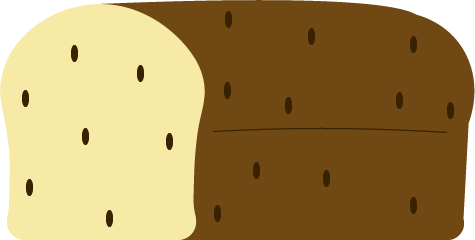
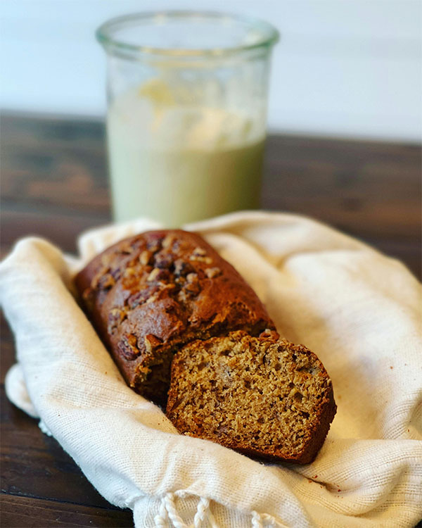

Avocado Banana Bread Recipe
Description:
This recipe for Avocado Banana Bread is paleo, gluten, grain, dairy and refined sugar free (with a vegan option). It contains 10g of Net Carbs making it also low carb (see nutritional info below).
The avocado and banana together, gives this bread a light, moist and soft texture that is also not too sweet and goes along perfect with crunchy macadamia nuts. If you’re vegan or are allergic to eggs, you can omit the egg in this recipe. The avocado and banana also act as a binder so it’s ok to omit it. Leaving the egg out will give the bread a denser texture.
The banana flavor is dominant, and I can hardly tell avocados are used in this recipe. If someone else had made it and gave me a piece to try, I would have never guessed the avocado was there. This is a good thing for me because I am not a huge fan of the taste of avocados.

Ingredients
- 1½ cups blanched almond flour
- 1½ teaspoons baking soda
- ½ teaspoon fine sea salt
- ¾ cup avocado
- ¾ cup banana
- 3 tablespoons coconut oil
- 1 teaspoon vanilla extract
- 2 tablespoons raw honey
- 1 large egg, room temperature
- ⅓ cup nuts of your choice (optional)
Steps
- Preheat oven to 350°and line an 8x4 inch medium loaf pan or cake pan with parchment paper
- In a large bowl, mix the almond flour, baking soda, and salt
- Add the avocado, banana, coconut oil, vanilla, honey.and egg to your food processor (or blender) and pulse until mixture is smooth
- Using a rubber spatula, gently mix the avocado mixture with the dry ingredients to form a batter, then fold in the nuts. Spread the batter evenly in the pan.
- Bake until a toothpick inserted into the center comes out clean; about 40-50 minutes.
- To preserve freshness, store bread inside an airtight container in the fridge.It can also be frozen for future use.